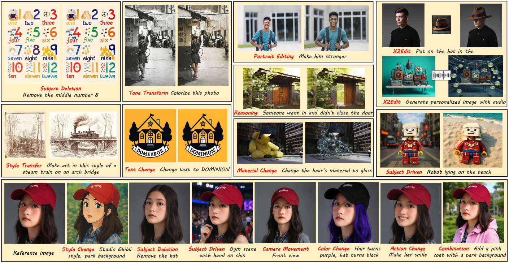

Research · Generative modeling · Representation learning
Zihao Pan
I am an undergraduate student at Sun Yat-sen University (SYSU).
My research interests mainly revolve around generative modeling and representation learning.
I am always open to research discussions and collaborations : )
News
-
Starting internship at Alibaba!
-
One paper is accepted by AAAI 2026
Selected Publications


Experience
Alibaba
Representation alignment (REPA) and pixel-space diffusion model.
– Present
Meituan
Unified multimodal modeling.
–